Myanmar · 31 · Children, cooking & household
A family who had her for two years asked her to move countries with them — she has been with them in Vietnam since 2025, and they will take a reference call. Six years and seven months in Singapore before that, three households, no gaps on the record.
Trust signals
Our strongest trust signal — the family she is with now, willing to speak for her directly. We arrange the call once a family has met her and is proceeding seriously. Nothing is in writing yet; the Singapore record is separately confirmed against the employment records we reviewed.
At a glance
The essentials
Available from
She needs to fly by the end of November 2026. Her visa in Vietnam runs out on 22 November and she would rather come sooner. Hire from overseas.
What an overseas hire adds
Her flight to Singapore and her medical check-up are paid by the hiring family, on top of the usual permit costs. We will set the figures out plainly before anyone commits.
Six and a half years in Singapore
October 2018 to June 2025 — three households, back to back, with no gaps on the record. Nearly four of those years were her first family.
Where she is now
Vietnam, since 2025 — with the family she had already spent two years with in Singapore, who asked her to come with them when they moved.
Children she has cared for
From four upward — two children of four and five in her second household, girls of six and eight in her third, and a homeschooled child of nine in her first.
Cooking
Vietnamese, and most Western and Middle Eastern cooking. She works from a recipe and adjusts it to a family’s taste or dietary needs. Photographs below.
Eldercare
Open to an eldercare job. She looked after her own grandmother through dementia, at home, until she died.
English
She studied English at university into her second year, and has spent six years with Australian and American families. Her spoken English is excellent.
Singapore from October 2018 to June 2025, and Vietnam since.
October 2018 to August 2022 — nearly four years. Her first Singapore household: a landed house with a Singaporean Chinese sir, an Australian ma’am and their child, who was nine and homeschooled, so he was at home with her through the day. The cooking, the laundry, the house and a little gardening. It ended when the family moved to Australia.
August 2022 to September 2024 — two years. An American–Vietnamese family of five in a landed house, with two children of four and five when she joined and a grandmother who came to stay. Her employment record carries it as cooking, general household and the care of a child.
September 2024 to June 2025. An American mother and her two girls, six and eight, in a private flat. The parents had separated and the girls were with their mother three or four days a week; the rest of the time Palae kept the flat and the cooking going.
2025 to now — Vietnam. Her second family — the one she had already given two years to — were moving to Vietnam and asked her to come with them. She went because she is fond of the children, and she has been with them there for over a year. That work sits outside her Singapore employment record, so it rests on her own account and on what that family will say on a call.
Why she wants to come back. The children are older now and need much less of her, and she has found Vietnam lonely. Singapore is where she has spent most of her working life, and she would like to be back there.
Where she’d suit next. One or two children of about five or six and upward, which is the age she knows best, or a household with an older relative at home. She cooks Western and Middle Eastern as readily as she cooks Vietnamese, works from a recipe, and her English is good enough to take instructions and hold a proper conversation.
Her employment record, her full work history and a reference call with her current employer are available to interested families, with her consent.
Photographs Palae took of her own cooking — the Western and Middle Eastern food she has cooked daily for Australian and American families, and the Vietnamese she cooks now.
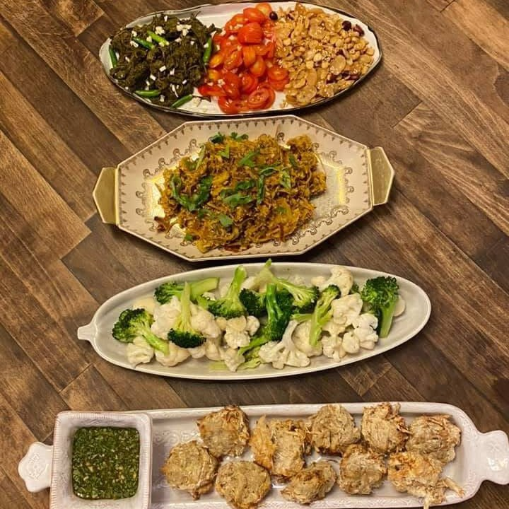
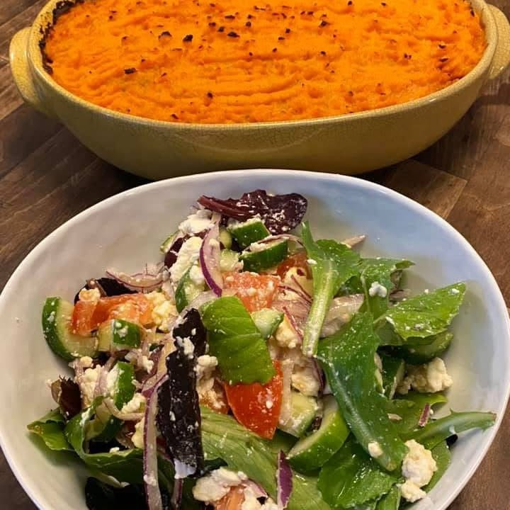
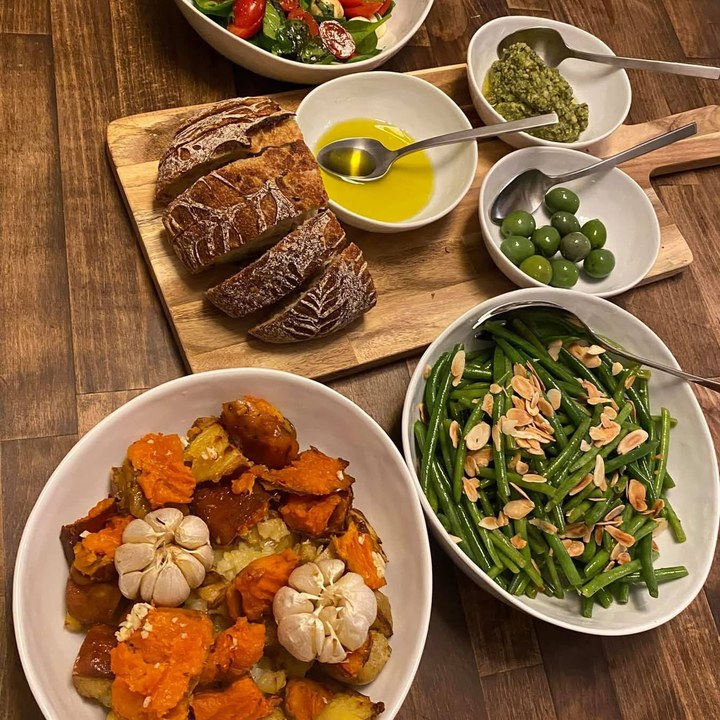
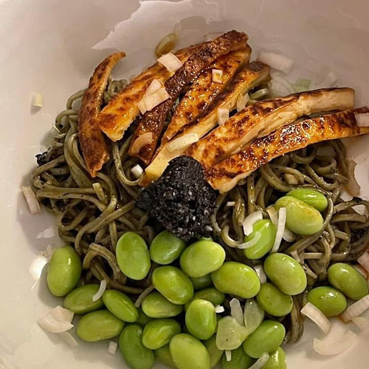
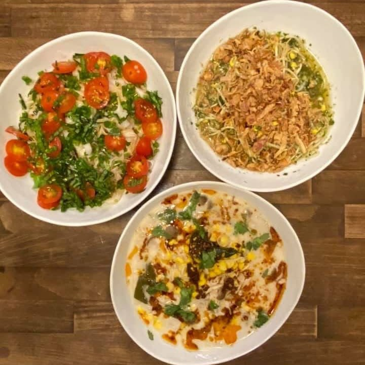
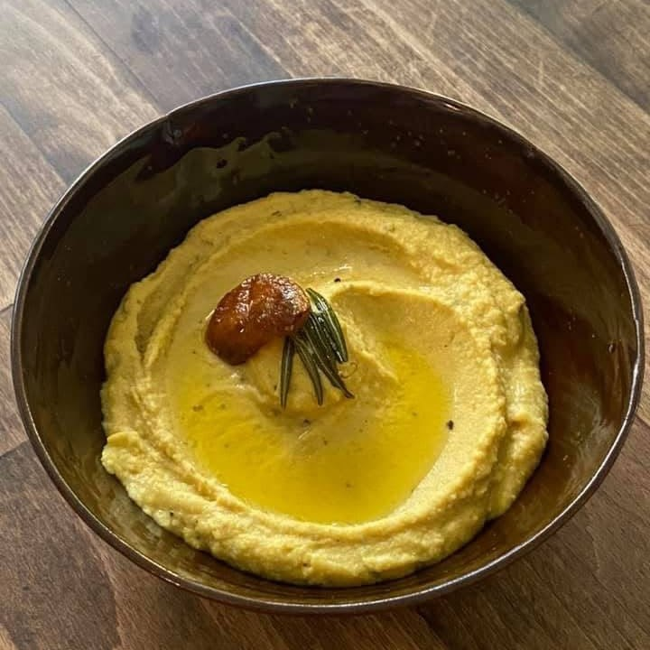
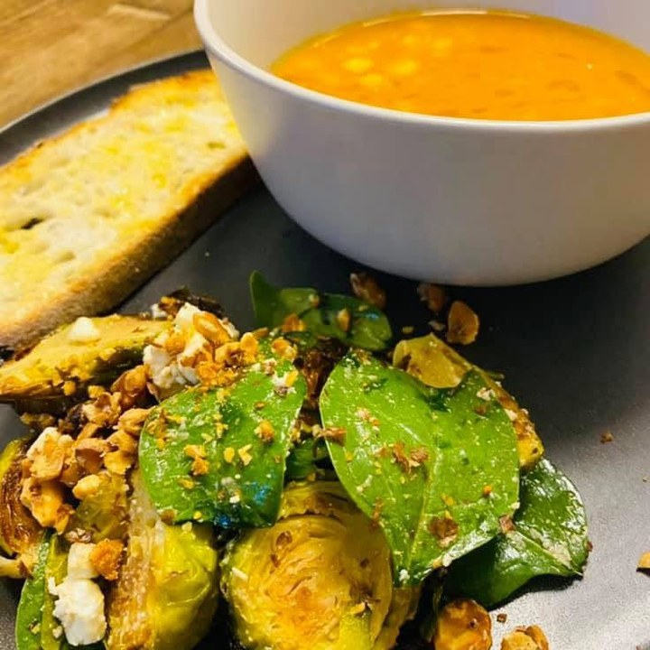
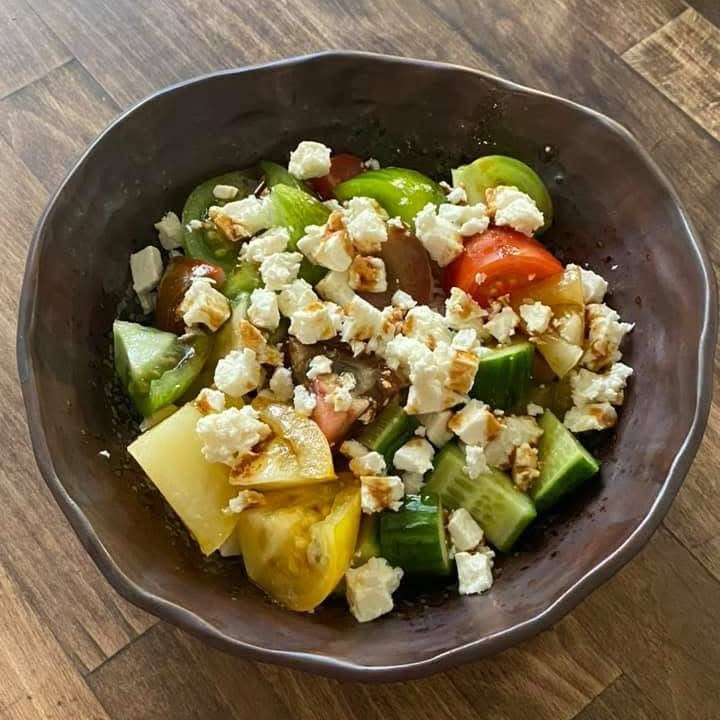
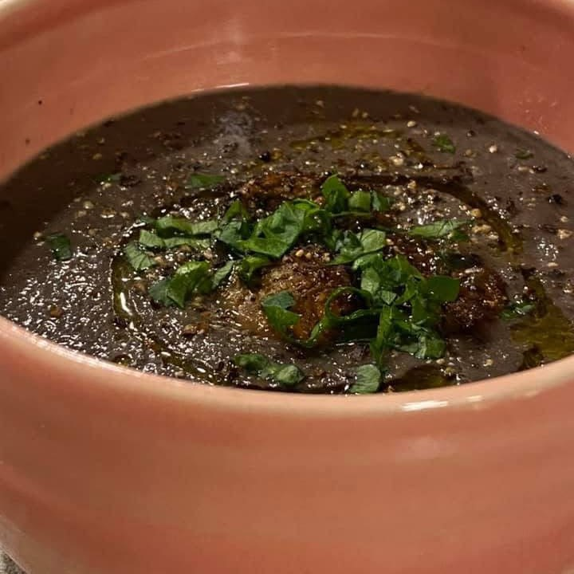
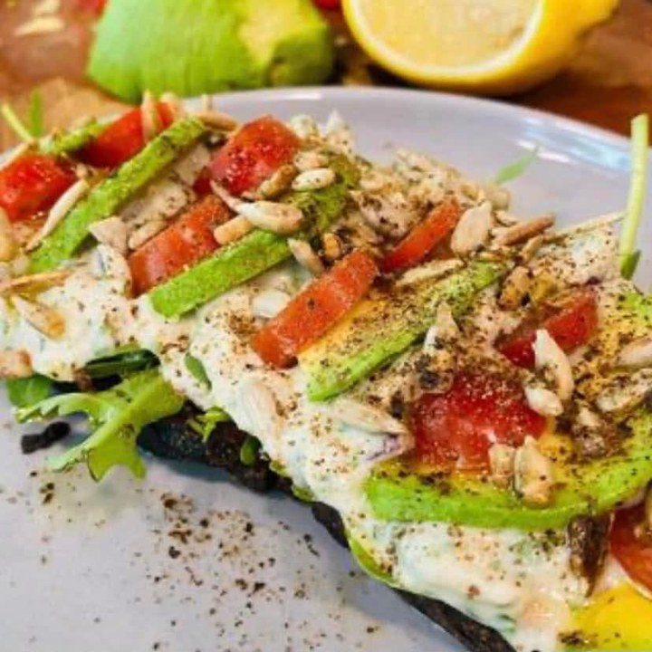
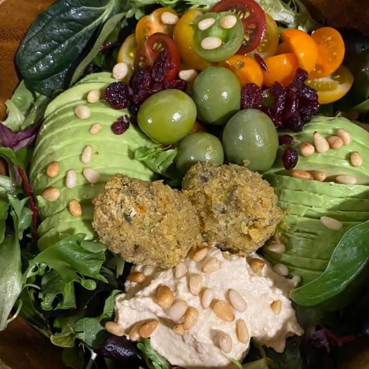
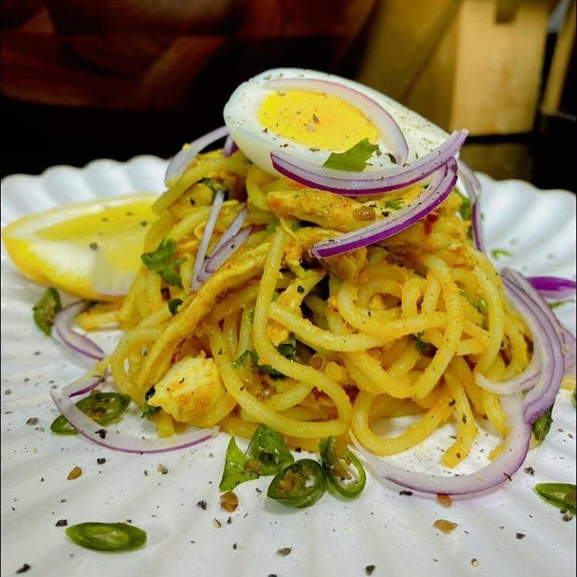
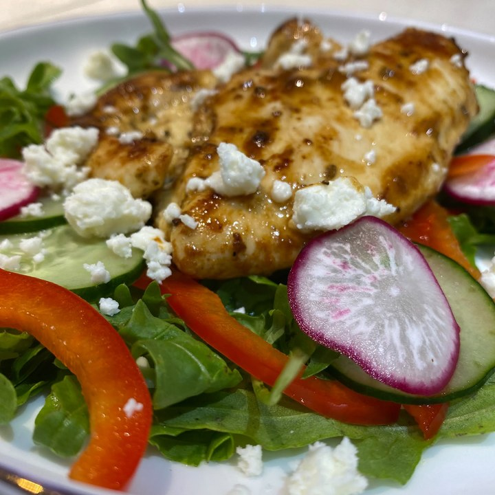
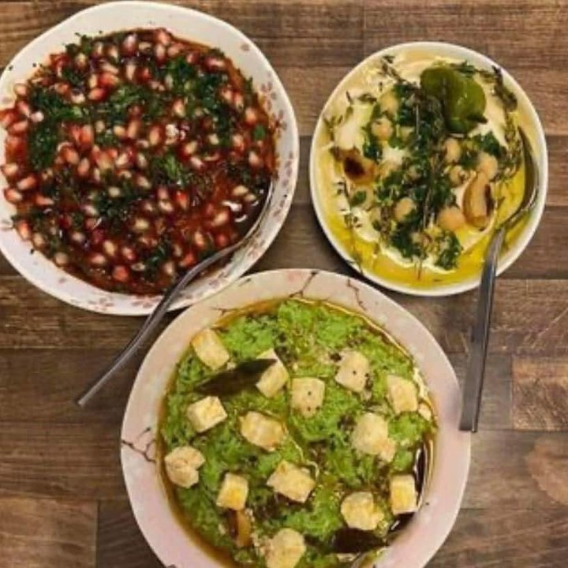
Tell us a little about your household and we’ll be in touch within 1–2 business days. We’ll only move forward if it feels like a genuine fit.